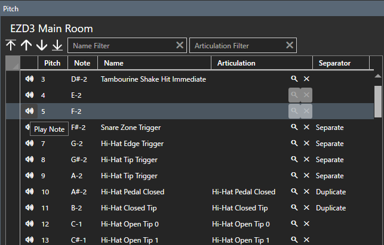

Plug-in
Bearbeitet die Drum-Map.
Drum-Map bearbeiten
Plug-in- und Kit-Informationen festlegen.

- Wählen Sie ein Plugin aus der Plugin-Liste aus. Fügen Sie das Plugin hinzu, falls es nicht vorhanden ist.
- Wählen Sie ein Kit aus der Kit-Liste aus. Wenn Sie kein Kit haben, fügen Sie eines hinzu.
- Konfigurieren Sie die Karte mithilfe der Pitch-Liste.
Pitch-Liste
Legen Sie die in VST (Drum-Soundquelle) definierten Drum-Map-Informationen fest.

-
Name
- Geben Sie den Tonhöhennamen ein. Wenn es leer ist, wird die Tonhöhe nicht festgelegt.
-
Artikulation
- Öffnen Sie den Artikulationsauswahlbildschirm über die Suchschaltfläche und wählen Sie die entsprechende aus.
-
Trennzeichen
- Wählen Sie das entsprechende aus dem Kombinationsfeld aus.
Filter
Filter nach Tonhöhenname und Artikulationsname.

Sie können einen Platzhalter mit einem Sternchen (*) angeben.
- Wenn nicht angegeben, genaue Übereinstimmung.
- Wenn am Anfang des Schlüsselworts platziert, mit dem Suffix übereinstimmen.
- Wenn am Ende des Schlüsselworts platziert, mit dem Anfang übereinstimmen.
- Wenn vor oder nach dem Schlüsselwort platziert, teilweise übereinstimmen.
Sortieren.
- Geben Sie jedes Element der entsprechenden Tonhöhenlinie ein.
-
Sie können die Sortierreihenfolge ändern, indem Sie auf die Spaltenüberschrift klicken.
- Mit dem ersten Klick wird es in aufsteigender Reihenfolge sortiert, mit dem zweiten wird es in absteigender Reihenfolge sortiert und mit dem dritten wird es in den Ausgangszustand zurückversetzt.
- Einige Bearbeitungsfunktionen sind im sortierten Zustand eingeschränkt. Wenn Sie es bearbeiten möchten, setzen Sie es bitte in den Ausgangszustand zurück.
Soundcheck

Durch Klicken auf das Lautsprechersymbol in jeder Zeile der Tonhöhenliste werden Note-On/Off-Nachrichten für diese Zeile an den MIDI-Port gesendet.
Kontextmenü
Wird durch Rechtsklick auf die Pitch-Liste angezeigt.

Artikulationskarte
Wird angezeigt, wenn sie über das Kontextmenü aufgerufen wird. Hier können Sie sehen, welche Tonhöhen welchen Artikulationen zugeordnet sind.

Zeigt die der Artikulation zugeordnete Tonhöhe an.
Bei den markierten Elementen in der Spalte „Sub“ handelt es sich um automatisch interpolierte Tonhöhen.
Plug-in-Option

-
Sound Check Velocity
- Legen Sie den Note-On-Velocity-Wert fest, der ausgegeben wird, wenn die Soundcheck-Taste gedrückt wird.
-
Input Fixed Enable
- MIDI In Fixed Pitch.
-
MIDI In Device
- Wählen Sie den Port aus, an den das MIDI-Keyboard angeschlossen ist. Wenn nicht erforderlich, wählen Sie bitte „Leer“ aus. Falls verfügbar, wird „Verbunden“ angezeigt; Falls nicht verfügbar, wird „Nicht verbunden“ angezeigt.
-
MIDI In Fixed Pitch
-
Gibt die Tonhöhe der MIDI-Tastaturnoten-Ein/Aus-Meldungen an, die akzeptiert werden sollen.
Wenn Sie diesen Wert angeben und „Input Fixed“ aktivieren, Die MIDI-Tastatureingabe wird in die in der Tonhöhenliste ausgewählte Note-Ein/Aus-Meldung umgewandelt und ausgegeben.
-
Gibt die Tonhöhe der MIDI-Tastaturnoten-Ein/Aus-Meldungen an, die akzeptiert werden sollen.
-
MIDI-Out-Gerät
- Wählen Sie das Ausgabeziel für MIDI-Nachrichten. Falls verfügbar, wird „Verbunden“ angezeigt; Falls nicht verfügbar, wird „Nicht verbunden“ angezeigt.